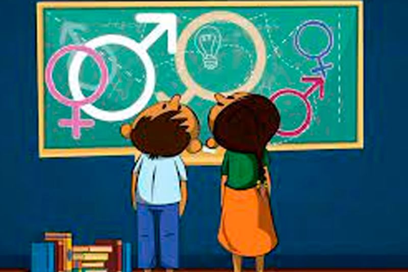
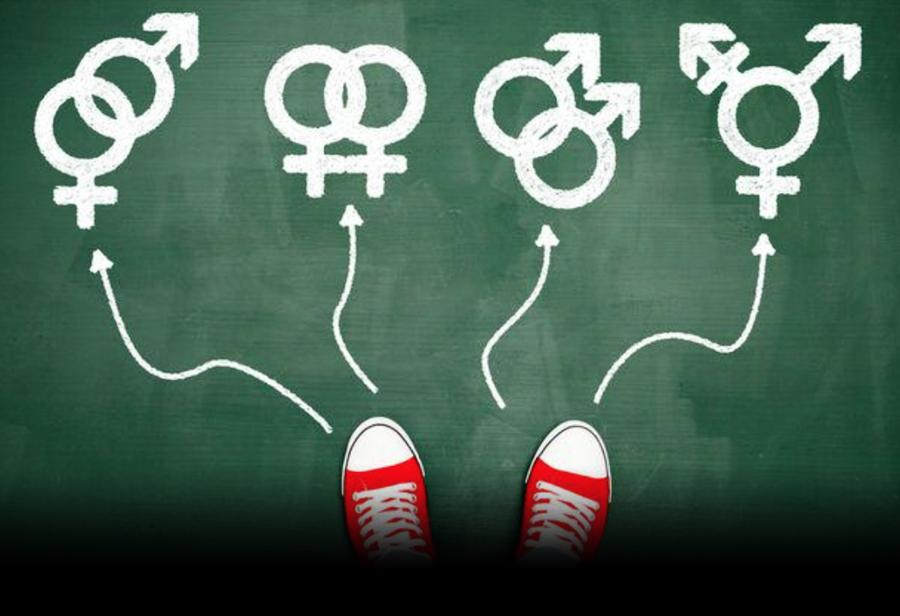

¿Qué es la educación sexual?
La educación sexual es un proceso continuo de enseñanza y aprendizaje sobre la sexualidad humana, que abarca aspectos físicos, biológicos, emocionales y sociales.
Importancia en la Adolescencia
Durante la adolescencia, etapa de exploración y descubrimiento, la educación sexual es fundamental para:
- Prevenir embarazos no deseados y enfermedades de transmisión sexual.
- Fomentar la autoestima y el respeto.
- Promover relaciones basadas en la comunicación y el consentimiento.
"La educación sexual integral contribuye al desarrollo de adolescentes informados, responsables y empáticos."
Factores Clave a Considerar
- Comunicación abierta: Brindar un espacio seguro para preguntas.
- Acceso a información científica: Datos claros y basados en evidencia.
- Toma de decisiones responsables: Analizar consecuencias y tomar elecciones informadas.
- Promoción del respeto e inclusión: Valorar la diversidad.
Beneficios de la Educación Sexual
- Fomenta la toma de decisiones responsables.
- Reduce el riesgo de embarazos no planeados e ITS.
- Promueve el respeto propio y el respeto hacia los demás.
Desventajas y Desafíos
- Puede generar controversia si no se imparte de forma adecuada.
- Existen barreras sociales que dificultan su implementación.

Recursos Adicionales
Existen diversas herramientas y plataformas que ofrecen información científica y adaptada para adolescentes.
- Sitios web especializados en salud sexual.
- Centros de orientación y asesoría.
Conclusión
La educación sexual en la adolescencia es esencial para el desarrollo integral de los jóvenes. Al brindar información clara y científica, se promueve la toma de decisiones responsables y se previenen riesgos.
